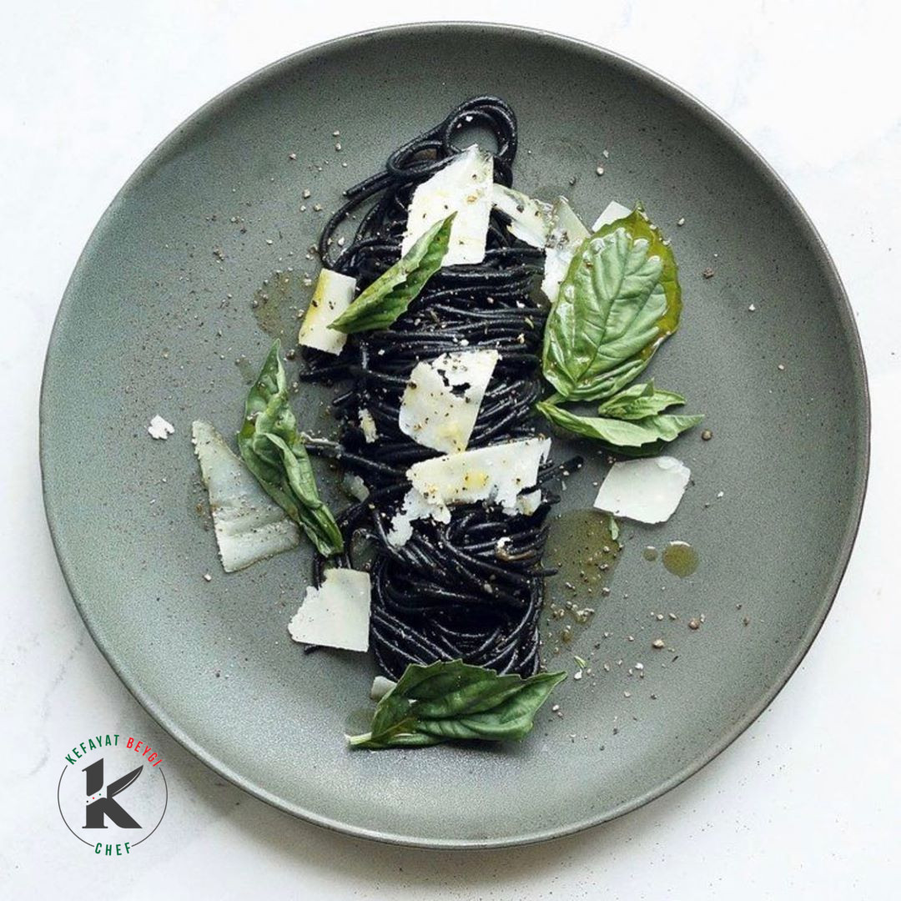
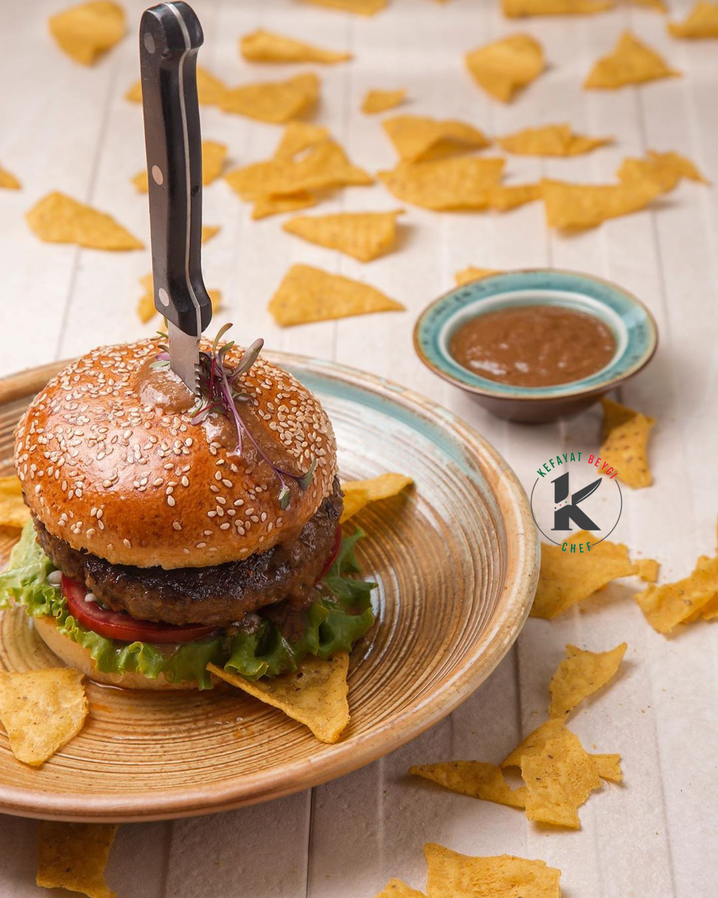

Coffee should be black as hell, strong as death and sweet as love.
Turkish proverb
Cooking as Cultural Beidge
Guy Fieri
"Cooking is all about people. Food is maybe the only universal thing that really has the power to bring everyone together. No matter what culture, everywhere around the world, people eat together."
A cat's foodie dream
My darling, if you marry me, I will promise to hunt 10 mices everyday and we will have 10 bbq mices on table for breakfast, lunch and dinner.
My darling, I will promise to buy a house nearby a cockroach playground that our children can play with and for you to make fried cockroach sandwiches for their school lunch.
I will promise to build a huge fish pool in our house, so you can bake fish pie for dessert.
Proverbs about food- Part 1
An apple a day keeps the doctor away.
A hungry man is an angry man.
Eat to live but do not live to eat.
Don't put all your eggs in one basket.
A watched pot never boils.
Proverbs about food- Part 2
It's no use crying over spilt milk.
One man’s meat is another man’s poison.
Do not bite off more than you can chew.
Too many cooks spoils the broth.
Life is just a bowl of cherries.
He who will steal an egg will steal an ox.
Proverbs about food- Part 3
Hunger is the best spice.
Kill not the goose that laid the golden egg.
The only free cheese is in the mouse trap.
You can’t make an omelet without breaking the eggs.
Baking bread experience
Every girl in my country suppose to know how to bake Afghan bread inside a brick oven dug in the ground. Believe it or not, I never learnt it despite my mum's insistence. Only in Malaysia, after feeling nostalgic, I realized I should learn baking bread.
I started with Pita bread. I will never be like my mum who could dig the whole in ground, turned it to a brick oven, make fire inside it and stick the bread while fire was on. Such a great skill, I owe everything to my mum.
Chalpak - Fried Flatbread
Chalpak, known as Chalpak among Afghanistani and Uzbek people, Shelpek among Kazakh, and çelpek among Turkmen is a traditional Central Asian flatbread which consumes all over the region. Main ingredients of Chalpak are flour, yeast or baking powder, water
or milk or kaymak, and salt.
In Afghanistan, chalpak serves as breakfast with tea. Also Hazara people of Afghanistan cook Chalpak during the festival of the dead which celebrates twice per year, one night before the last day of Ramadan and one night before Eid al-Adha.
How to cook Chalpak?
Cooking Chalpak is easy but it needs gentle handling. All the ingredients include flour, yeast and water should be mixed and kneed, then proofed for 2 hours. After the dough is ready, it should shape into balls, then flat in a circle shape.
In terms of choosing cooking oil, Canola oil or sunflower oil is recommended which are able to handle high heat. The flat bread should gently be lowered into the hot oil, otherwise it will splatter and possibly burn hands and face. Both side of the Chalpak
should be in golden color.
Chalpak - Earthworm shape
As you see in the photo, I cooked Chalpak in an earthworm shape, as a tribute to earthworms which according to Modern Agriculture website are importants
because:
"they help restore soil nutrients, improve soil structure, allow water and air to enter the soil more freely, conserve energy, and boost biodiversity".
Also, handling earthworm shape Chalpak is much easier than circle shape.
Mung Bean (Maash) Hummus
Mung bean or Maash is popular in Afghan cuisine like Maash Palaw/ Palau, Kichiri Quroot and Shula Ghorbandi.
I don't like Mung beans that much but since they contain protein, sometimes I use Mung beans sprout in salad.
Last week, I saw a Mung Bean Hummus recipe on Yutube. Based on the video, I used Mung Beans instead of Chickpeas. It turned out to be a delicious recipe.
کفایت بیگی از آشک تا تورتلینی بخش ۱
اگو منتقد غذا در انیمیشن راتاتویی برنده اسکار بهترین فیلم انیمیشن سال ۲۰۰۷، می گوید: «هر کسی نمی تواند یک هنرمند بزرگ شود ولی هر هنرمند بزرگی می تواند از هر جایی بیاید». هنرمند بزرگی که مایلم امروز راجع به او برایتان بنویسم، نه با قلم و کاغذ نقاشی می
کند، نه با آبرنگ، نه با تارهای گیتار و ویولن پرده های گوشتان را به نوازش می گیرد، نه با دمبوره و طبله، نه با کلمات رگ خواب شما را می رباید نه با اصوات...
هنرمند بزرگ ما کسی است که به مواد غذایی روح می بخشد، هنرمند بزرگ ما با مواد غذایی، نقش های زیبا، خوشرنگ، خوشمزه، خوشبو و دلفریب بر کاسه و بشقاب ها می آفریند. به قول توماس کلر- سرآشپز معروف آمریکایی: «یک ریسپی، روح ندارد. شما به عنوان آشپز، باید به ریسپی
روح ببخشید». بله، هنرمند بزرگ ما یک آشپز است و باز هم بله، آشپزی، نیز هنر است.
کفایت بیگی از آشک تا تورتلینی بخش ۲
آنتونی بوردین سرآشپز فقید امریکایی می گوید: «بدن شما، یک معبد نیست، یک شهر بازی است. از گردش، لذت ببرید». پس بیایید بریم به مزار/ سیل گل لاله زار! گل لاله ما، شف کفایت بیگی از شهر
مزارشریف افغانستان است، شهر میله گل سرخ و روضه سخی جان. بیایید بخوانیم شف کفایت چطور از گردش در بدن خود لذت برده و امروز به عنوان یک شف بین المللی در ایران شناخته می شود.
کفایت بیگی در سن ۹ سالگی وارد مدرسه ای شبانه روزی در مزارشریف می شود و با برادرش که استاد دانشگاه، مدرس حوزه و حافظ قرآن بوده، زندگی می کند. او راجع به برادرش می گوید: «سواد خواندن و نوشتن را از برادرم یاد گرفتم، او بهترین معلم زندگیم بوده است». کفایت
بیگی از همان زمان، برای خودش و برادرش آشپزی می کند، گو اینکه خودساختگی از همان زمان در تقدیر او نوشته شده باشد. پس از فوت برادرش، نزد خانواده برگشته و به مادرش در آشپزی کمک می نماید.
کفایت بیگی از آشک تا تورتلینی بخش ۳
او در کنار مغازه گلسازی و تزیینات سفره آرایی، به عنوان آشپز در مهمانی ها و مجالس دوستانش شرکت می کند ولی پس از یک ورشکستگی تصمیم می گیرد به ایران مهاجرت کند. در دیار غربت و مهاجرت، کفایت همچنان به علاقه اش به آشپزی فکر می کند ولی از آن جایی که کارهای
ساختمانی، تنها گزینه کاری برای مهاجران افغانستانی مقیم ایران است، او نیز مجبور می شود به کارهای ساختمانی رو آورد ولی خیلی زود وارد آشپزخانه شده و روزانه برای ۱۵۰ تن پرسنل شرکت ساختمانی آشپزی می کند.
روزی به او پیشنهاد کار در یک رستوران به عنوان نظافتچی داده می شود. با شنیدن نام رستورانت، فورا شغل را قبول می کند. او که همیشه به رویای آشپزشدن فکر می کرده، احساس می کند زمان آن رسیده که خودش و توانایی هایش را به دیگران ثابت کند. کفایت به پاکیزگی و نظافت
رستورانت خیلی اهمیت داده و وظایفش را با کیفیت بالا و سریع انجام می دهد، به همین دلیل خیلی زود به عنوان ظرفشوی وارد آشپزخانه می شود.
کفایت بیگی از آشک تا تورتلینی بخش ۴
نظافتچی های رستورانت ها و ظرفشویان، قهرمانان ستایش نشده ی رستورانت ها هستند. حفظ پاکیزگی رستورانت ها و ظروف آشپزخانه، بیانگر حفظ بهداشت رستورانت هاست. به همین دلیل نظافتچیان و ظرفشویان، قلب موفقیت رستورانت ها محسوب می شوند.

پس از گذشت ۲۰ روز، مدیر رستورانت با دیدن علاقه و سختکوشی کفایت، از او می خواهد تا کارش را به عنوان کمک آشپز، ادامه دهد. بسیاری از شف های معروف دنیا می گویند: «اگر می خواهی شف شوی، کارت را با ظرفشویی شروع کن». ظرفشویان قوی، شف های قوی می شوند. توماس
کلر و آنتونی بوردین که پیشتر از آن ها نقل قولی آوردیم، نیز کارشان را با ظرفشویی در رستورانت آغاز نمودند. زمانی آنتونی بوردین گفت: ظرفشویی، زندگیم را نجات داد و پس از اولین روز ظرفشویی در رستورانت به خودم افتخار می کردم.
کفایت بیگی از آشک تا تورتلینی بخش ۵
کفایت می گوید: «آن رستورانت یک شف ایتالیایی داشت. روزی او مشغول درست کردن پاستای تورتلینی بود که مرا به یاد آشک خودمان که با مادرم درست می کردم، انداخت. همان موقع بهش گفتم: این شبیه آشک ماست و من هم بلدم، او گفت: اگر بلدی، بیا درست کن و وقتی درست کردم:
او گفت: این تورتلینی است و من گفتم: این آشک است... از آن زمان به بعد دوستان خوبی شدیم و او در سه ماه ۷۰۰ نوع غذای ایتالیایی به من آموزش داد». پاستای تورتلینی، پاستای مورد علاقه کفایت است و به خاطر تاثیری که در سرنوشت او داشته، از آن
به عنوان پاستای سرنوشت ساز یاد می کند.
کفایت در ادامه خاطراتش می گوید: «سه سال در آن رستورانت کار کردم و به سمت معاون سرآشپز ارتقا یافتم ولی بعدا به خاطر یادگیری بیشتر کارم را در رستورانت ایتالیایی بیچه ادامه دادم. کمپانی بیچه ۴۰ شعبه در جهان دارد و مدرک آشپزیم را هم از کمپانی بیچه گرفتم.
در مدت دو و نیم سال، مهارت های آشپزی خوبی از جمله مدیریت، دیزاین منوی غذا و آشپزی برای هزار تن یاد گرفتم.
کفایت بیگی از آشک تا تورتلینی بخش ۶
کفایت در حال حاضر، مشغول آموزش آشپزی در آموزشگاه های آشپزی ایران و ارائه مشاوره به رستورانت دارهای ایرانی در زمینه راه اندازی رستورانت های لاکچری، هتل ها و رستورانت های زنجیره ای در بزرگترین شهرهای ایران است. او از غذاهای خوشمزه وطنش غافل نمانده و تلاش
کرده تا غذاهایی مثل منتو، آشک، قابلی پلو، بولانی، کبب شامی و ... را وارد منوی غذایی رستورانت های ایرانی نماید. او می گوید: «استقبال ایرانیان از غذاهای افغانی خیلی خوب بوده است». به قول گای فیری رستورانت دار امریکایی، نویسنده و مجری
تلویزیون: «آشپزی در کل راجع به مردم است. غذا تنها پدیده جهانی است که واقعا قدرت نزدیک ساختن مردم به یکدیگر را دارد».

یکی از علایق شف کفایت بیگی، تشویق نمودن مهاجران هموطنش در ایران به یادگیری آشپزی است. «دل مه مایه که کشور مه آزاد باشه/ دل مه مایه که کشور مه آباد باشه/ ای خدا جان مه خیلی آرزو داروم/ زندگی مه از امنیت پر باشه/ کشور مه از زیبایی ها رنگی باشه». کفایت می
گوید: «یکی از اهدافم در زندگی این است که روزی برگردم افغانستان، کورس های آشپزی برگزار کنم و به رستورانت دارها در زمینه ارتقای رستورانت هایشان مشاوره دهم».
Quote
"If you really want to make a friend, go to someone 's house and eat with him...the people who give you their food give you their heart."